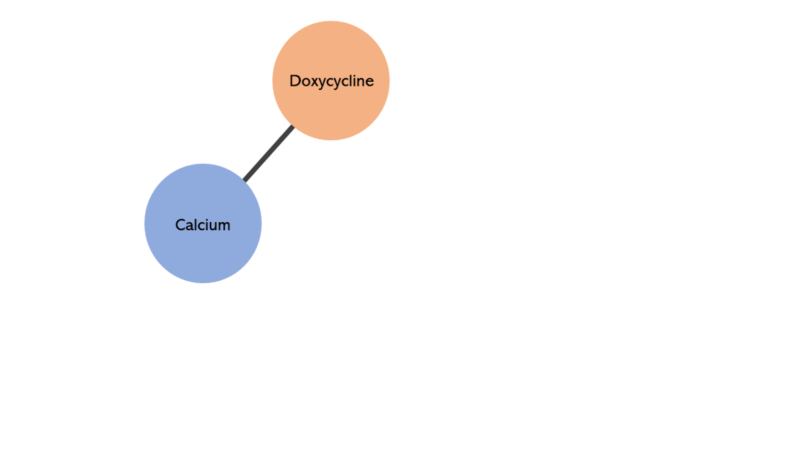
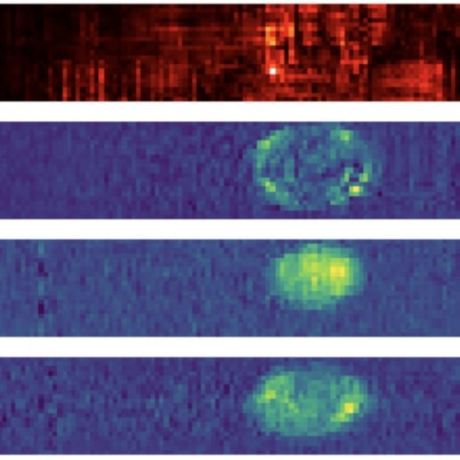
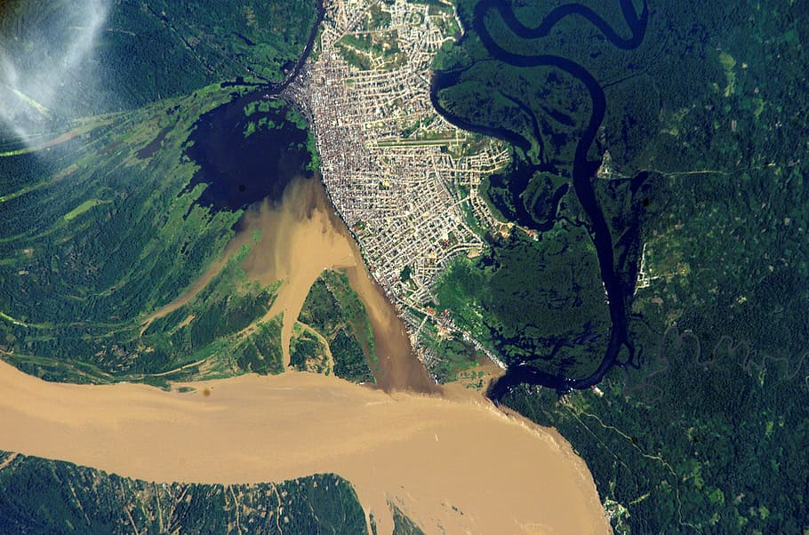
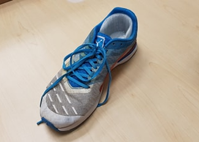
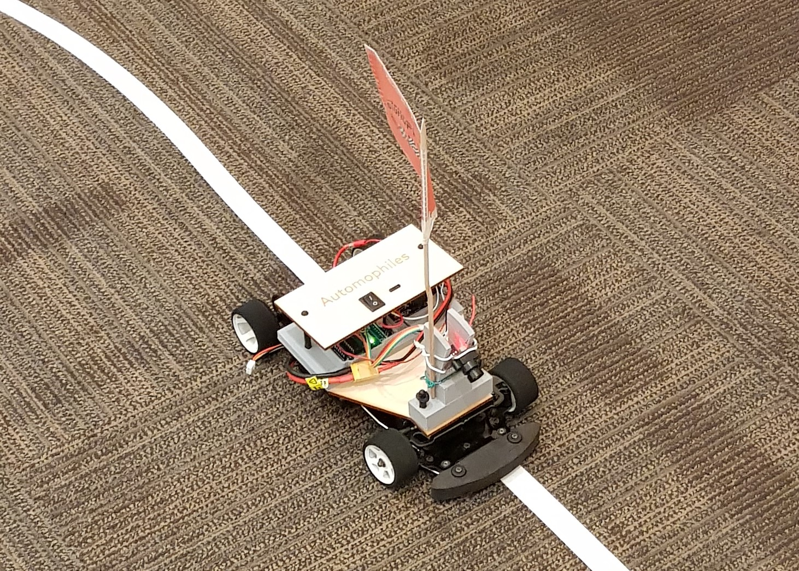
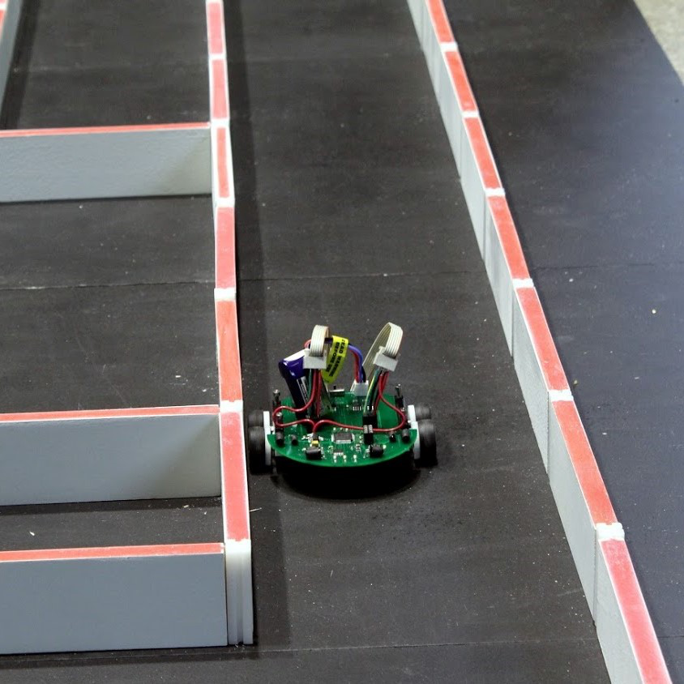

Hi, I am Tanish.
About
I am a Computer Science graduate student at Stanford University, where I am specializing in Artificial Intelligence. I enjoy exploring machine learning applications to tackle problems across many fields, and want to develop engineering ideas that can make a tangible, positive impact in people's lives.
Education
Stanford University
MS Computer Science
September 2020 - June 2022
Specialization: Artificial Intelligence
Teaching
CS 103: Mathematical Foundations of Computing
CS 107: Computer Organization & Systems
BIOE 301P: Research Data and Computation
STS 1: The Public Life of Science and Technology
University of California, San Diego
BS Electrical Engineering
September 2016 - March 2020
Specialization: Machine Learning and Controls
Minor: Business
Teaching
ECE 144: LabVIEW Programming
PHYS 2D: Relativity and Quantum Physics
Experience
Research Assistant
Gurtner Lab
Stanford Medicine
Stanford Medicine
June 2021 - Present
Changing Cities Research Lab
Department of Sociology @ Stanford
March 2021 - Present
Stanford Vision and Learning Lab
January 2021 - Present
Undergraduate Researcher
DetecDrone Intelligent Drones Lab
June 2020 - December 2020
Affordable Smart Wheelchair Lab
June 2019 - March 2020
Ultrafast & Nanoscale Optics Lab
March 2019 - June 2019
Electrical Engineering Intern
AECOM
June 2018 - August 2018
Projects
Check out some of my recent projects.
-
Graph Machine LearningOnline Link Prediction with Graph Neural Networks.
-
Computer VisionClassification of cellular states for high-speed image-based microfluidic cell sorting.
-
Deep LearningAI for Predicting Unstabilized Approaches in Aircraft.
-
Trustworthy Machine LearningEvaluating Machine Learning-based Skin Cancer Diagnosis.
-
Computer VisionMachine Learning-based Mapping of Neolithic Water Management Features.
-
Machine LearningGait-Correcting Insole for People with Parkinson's Disease.
-
Intelligent SystemsAutonomous Line-Following Vehicle.
-
Intelligent SystemsMaze-Solving Robot.
Online Link Prediction with Graph Neural Networks
We explore the inductive power of GNNs on online link prediction by using the ogb-ddi (drug-drug interaction) dataset. Specifically, we demonstrate GraphSAGE’s ability to predict new links (drug interactions) as new nodes (drugs) are sequentially added to an initial subset of the graph.
- Graph Machine Learning
Classification of cellular states for high-speed image-based microfluidic cell sorting
In this project, we establish the feasibility of deep learning on ICS cellular imaging by training cell type classifiers on a dataset of ∼ 2 million images from published and unpublished ICS experiments.
- Computer Vision
AI for Predicting Unstabilized Approaches in Aircraft
Unstabilized approaches are a major hazard for general aviation aircraft. We develop a Machine Learning-based predictive warning system, which can be used to create objective ‘call-outs’ to aid decision making, which has been emphasized in research by Flight Safety Foundation (2017) and International Air Transportation Association (2016)
- Deep Learning
Evaluating Machine Learning-based Skin Cancer Diagnosis
As Machine Learning-based tools begin to be used more widely and make skin cancer diagnosis more accessible, it is imperative to ensure that they do so reliably. I evaluate the reliability of two Deep Learning models for skin cancer detection by recreating and modifying these models and analyzing their explainability and fairness.
- Trustworthy Machine Learning
Machine Learning-based Mapping of Neolithic Water Management Features
We use deep neural networks, in particular Fully Convolutional Neural Networks (FCNNs), in conjunction with high-resolution, multi-temporal PlanetScope (PS) imagery to detect spectral signals of water that track a seasonal pattern in the Deccan region (the South Indian Neolithic–Iron Age transition).
- Computer Vision

Gait-Correcting Insole for People with Parkinson's Disease
We developed a Machine Learning-powered shoe insole for people with Parkinson's Disease. The insole analyzes gait patterns and provides haptic feedback to cue users to move their feet towards more stable positions. The project was initiated as part of the Design Competition organized by the ECE Department at UC San Diego.
- Machine Learning

Autonomous Line-Following Vehicle
We built an autonomous, line-following vehicle as part of the UC San Diego IEEE Annual Project. We received the first place Grand PrIEEE Annual Robotics Competition, with the fastest such vehicle.
- Intelligent Systems
Maze-Solving Robot
We built a maze-solving robotic mouse, based on the micromouse. This was built as part of UC San Diego IEEE's Annual Micromouse Project.
- Intelligent Systems
Get In Touch
I’d love to hear from you.